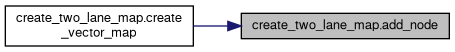
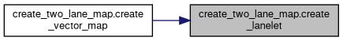
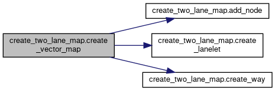
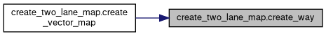

- Generated on Thu Apr 16 2026 13:56:21 for Carma-platform by
 1.9.4
1.9.4
|
Carma-platform v4.11.0
CARMA Platform is built on robot operating system (ROS) and utilizes open source software (OSS) that enables Cooperative Driving Automation (CDA) features to allow Automated Driving Systems to interact and cooperate with infrastructure and other vehicles through communication.
|
Functions | |
| def | add_node (x, y, z=0.0) |
| def | create_way (node_ids, tags) |
| def | create_lanelet (left_id, right_id, tags) |
| def | create_vector_map (filename, total_length, lane_width, points_per_meter) |
Variables | |
| string | geo_reference = "+proj=tmerc +lat_0=0 +lon_0=0 +k=1 +x_0=0 +y_0=0 +datum=WGS84 +units=m +no_defs" |
| proj = Proj(geo_reference) | |
| transformer = Transformer.from_proj(proj, "epsg:4326", always_xy=True) | |
| int | node_id = 1000000 |
| int | way_id = 1000 |
| int | relation_id = 100 |
| nodes | |
| ways | |
| relations | |
| parser = argparse.ArgumentParser(description="Create a vector map with two parallel lanes.") | |
| type | |
| str | |
| default | |
| help | |
| float | |
| int | |
| args = parser.parse_args() | |
This script creates a vector map with two parallel lanes using the Lanelet2 library and saves it as an OSM file.
The script can be run from the command line with the following arguments:
- filename: The output filename for the vector map.
- total_length: The length of the lanes (default is 50.0).
- lane_width: The width of the lanes (default is 3.7).
- points_per_meter: The number of points per meter (default is 5).
Dependencies:
- lanelet2: The Lanelet2 library for handling lanelet maps.
- argparse: For parsing command line arguments.
Usage:
python3 create_two_lane_map.py --filename output.osm --total_length <total_length> --lane_width <lane_width> --points_per_meter <points_per_meter>
| def create_two_lane_map.add_node | ( | x, | |
| y, | |||
z = 0.0 |
|||
| ) |
Definition at line 35 of file create_two_lane_map.py.
References str.
Referenced by create_vector_map().

| def create_two_lane_map.create_lanelet | ( | left_id, | |
| right_id, | |||
| tags | |||
| ) |
Definition at line 57 of file create_two_lane_map.py.
References str.
Referenced by create_vector_map().

| def create_two_lane_map.create_vector_map | ( | filename, | |
| total_length, | |||
| lane_width, | |||
| points_per_meter | |||
| ) |
Create a vector map with two parallel lanes. Inputs: - filename: The output filename for the vector map. - total_length: The length of the lanes. - lane_width: The width of the lanes. - points_per_meter: The number of points per meter.
Definition at line 68 of file create_two_lane_map.py.
References add_node(), create_lanelet(), create_way(), and int.

| def create_two_lane_map.create_way | ( | node_ids, | |
| tags | |||
| ) |
Definition at line 46 of file create_two_lane_map.py.
References str.
Referenced by create_vector_map().

| create_two_lane_map.args = parser.parse_args() |
Definition at line 148 of file create_two_lane_map.py.
| create_two_lane_map.default |
Definition at line 144 of file create_two_lane_map.py.
| create_two_lane_map.float |
| string create_two_lane_map.geo_reference = "+proj=tmerc +lat_0=0 +lon_0=0 +k=1 +x_0=0 +y_0=0 +datum=WGS84 +units=m +no_defs" |
Definition at line 23 of file create_two_lane_map.py.
| create_two_lane_map.help |
Definition at line 144 of file create_two_lane_map.py.
| create_two_lane_map.int |
Definition at line 147 of file create_two_lane_map.py.
Referenced by speedharm_auto_configure.assign_algorithm(), speedharm_auto_configure.assign_experiment(), route::RouteGeneratorWorker.composeRouteMarkerMsg(), RouteCreation_CSV2Yaml.convertCSVToRouteFile(), create_vector_map(), platooning_strategic_ihp::PlatooningManager.getDynamicLeader(), guidance::GuidanceWorker.handle_on_activate(), route::Route.handle_on_activate(), process_traj_logs.index_plot_with_slider(), process_bag.index_plot_with_slider(), sci_strategic_plugin::SCIStrategicPlugin.plan_maneuvers_callback(), speedharm-cli.process_assign_algorithm(), speedharm-cli.process_assign_experiment(), and process_traj_logs.xy_scatter_with_slider().
| int create_two_lane_map.node_id = 1000000 |
Definition at line 30 of file create_two_lane_map.py.
| create_two_lane_map.nodes |
Definition at line 33 of file create_two_lane_map.py.
| create_two_lane_map.parser = argparse.ArgumentParser(description="Create a vector map with two parallel lanes.") |
Definition at line 143 of file create_two_lane_map.py.
| create_two_lane_map.proj = Proj(geo_reference) |
Definition at line 26 of file create_two_lane_map.py.
| int create_two_lane_map.relation_id = 100 |
Definition at line 32 of file create_two_lane_map.py.
| create_two_lane_map.relations |
Definition at line 33 of file create_two_lane_map.py.
Referenced by route_following_plugin::RouteFollowingPlugin.isLaneChangeNeeded().
| create_two_lane_map.str |
Definition at line 144 of file create_two_lane_map.py.
Referenced by add_node(), create_lanelet(), carma_src.create_ros2_tracing_action(), create_way(), environment.generate_launch_description(), approaching_emergency_vehicle_plugin::ApproachingEmergencyVehiclePlugin.generateApproachingErvStatusMessage(), process_bag.index_plot_with_slider(), speedharm_auto_configure.log(), speedharm_auto_configure.main(), ros2_rosbag.record_ros2_rosbag(), reindex_active_rosbags.reindex_bag_files(), lanelet::MapConformer::anonymous_namespace{MapConformer.cpp}.startswith(), traffic_incident_parser::TrafficIncidentParserWorker.stringParserHelper(), carma_cooperative_perception.to_string(), and RouteCreation_CSV2Yaml.waypointAsYAMLString().
| create_two_lane_map.transformer = Transformer.from_proj(proj, "epsg:4326", always_xy=True) |
Definition at line 27 of file create_two_lane_map.py.
| create_two_lane_map.type |
Definition at line 144 of file create_two_lane_map.py.
Referenced by frame_transformer::Node.build_transformer(), lanelet::MapConformer::anonymous_namespace{MapConformer.cpp}.buildControlLine(), route_following_plugin::RouteFollowingPlugin.bumper_pose_cb(), platooning_strategic_ihp::PlatooningStrategicIHPPlugin.composeMobilityOperationLeader(), platooning_strategic_ihp::PlatooningStrategicIHPPlugin.composeMobilityOperationLeadWithOperation(), lanelet::MapConformer::anonymous_namespace{MapConformer.cpp}.getChangeType(), and arbitrator.maneuver_type_to_string().
| int create_two_lane_map.way_id = 1000 |
Definition at line 31 of file create_two_lane_map.py.
| create_two_lane_map.ways |
Definition at line 33 of file create_two_lane_map.py.